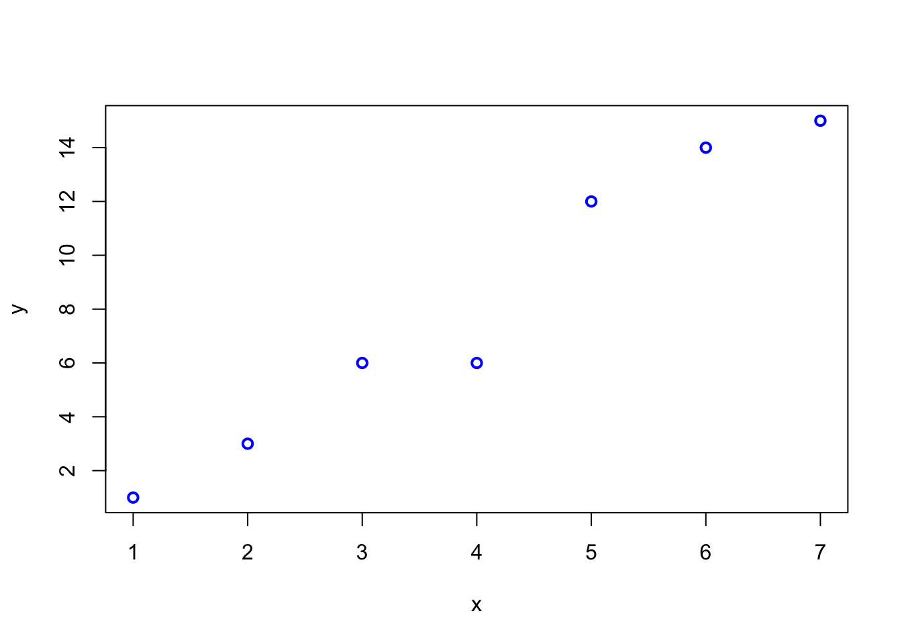

Chapter 4 Bayes statistics
To gain a richer understanding, I can recommend (optionally) reading the introductory chapters in John Kruschke’s book Doing Bayesian Data Analysis.
As stated in the first chapter, Bayesian statistics is based on the idea that probability is a measure of our uncertainty about an event or a parameter. Here, we use prior (i.e., before/outside of our experiment) knowledge about a parameter and update this knowledge with new data using the famous Bayes’ theorem:
\[ p(\theta | \text{data}) = \frac{p(\text{data} | \theta) \cdot p(\theta)}{p(\text{data})}, \]
where:
\(p(\theta | \text{data})\) is the posterior probability: the updated probability of the parameter \(\theta\) given the observed data.
\(p(\text{data} | \theta)\) is the likelihood: the probability of observing the data given a certain value of the parameter \(\theta\).
\(p(\theta)\) is the prior probability: the initial belief about the parameter \(\theta\) before seeing the data.
\(p(\text{data})\) is the marginal likelihood or evidence: the probability of observing the data under all possible parameter values.
In our context, \(\theta\) is an effect size, a group difference (\(\mu_1 - \mu_2\)), a correlation (\(\rho\)), a regression coefficient (\(\beta\)), or a proportion (p)…
4.1 Derivation of Bayes’ theorem
We have already come across Bayes’ theorem in the context of conditional probability where we have calulated the probability of a person having a disease given that they have tested positive for it:
\[ \mathbb{P}(Dpos|Tpos) = \frac{\mathbb{P}(Tpos|Dpos) \cdot \mathbb{P}(Dpos)}{\mathbb{P}(Tpos)}. \]
The numerator is by definition of the conditional probability just: \(\mathbb{P}(Tpos \cap Dpos)\). Let’s put this in:
\[ \mathbb{P}(Dpos|Tpos) = \frac{\mathbb{P}(Tpos \cap Dpos)}{\mathbb{P}(Tpos)}. \]
which is also true by the definition of conditional probability. One can rewrite the denominator as:
\[ \mathbb{P}(Tpos) = \mathbb{P}(Tpos|Dpos)\mathbb{P}(Dpos) + \mathbb{P}(Tpos|Dneg)\mathbb{P}(Dneg) = TP + FP, \] since one can have a positive test result if one has the disease (true positive) or if one does not have the disease (false positive). This is the so-called law of total probability. To see this, just draw a binary tree starting with disease status (pos/neg) and test result (pos/neg) as branches, as we did before.
Summarized, we have:
\[ \mathbb{P}(Dpos|Tpos) = \frac{\mathbb{P}(Tpos|Dpos) \cdot \mathbb{P}(Dpos)}{\mathbb{P}(Tpos|Dpos) \cdot \mathbb{P}(Dpos) + \mathbb{P}(Tpos|Dneg) \cdot \mathbb{P}(Dneg)}. \]
We have proven Bayes theorem for the case of a binary test.
Note that simple fact that if \(\mathbb{P}(Dpos)\) (which is the prevalence of the disease) is small, the probability of having the disease given a positive test result is also small. In fact, it is arbitrarily small the smaller the prevalence is. For \(\mathbb{P}(Dpos)=0\), we have \(\mathbb{P}(Dpos|Tpos) = \frac{0}{0 + \mathbb{P}(Tpos|Dneg) \cdot 1} = 0\), assuming that there can still be false positive test results: \(\mathbb{P}(Tpos|Dneg) > 0\).
We could easily image that there are not only two states reported by a test. Maybe, it is a more sophisticated test reporting 3 or 4 states.
We would just extend the denominator accordingly (e.g., for a 3-state test with labels \(T_1, T_2, T_3\), where \(T_3\) indicates a high concentration of some component):
\[ \mathbb{P}(Dpos|T_3) = \frac{\mathbb{P}(T_3|Dpos) \cdot \mathbb{P}(Dpos)}{\mathbb{P}(T_3|Dpos) \cdot \mathbb{P}(Dpos) + \mathbb{P}(T_3|Dneg) \cdot \mathbb{P}(Dneg)}, \] which would be the probability that the person has the disease given that the test result is \(T_3\).
In this context, we are interested in the probability of a state of disease. We estimate this probability based on the test result (\(Tpos\) or \(Tneg\)) and prior knowledge about the disease (\(\mathbb{P}(Dpos)\)). The prior knowledge does not necessarily have to be known before the test, the point is to combine knowledge in a coherent way. We will later see that the order of this combination is not important.
4.2 Bayes’ theorem in the context of parameter estimation
If we use the coin flip example, you can always think of probability of a therapy working for instance. It is a placeholder for a parameter of interest.
A probability distribution outlines all possible outcomes of a random process along with their associated probabilities. For instance, in the case of a coin toss, the distribution is straightforward: there are two outcomes, heads and tails, with corresponding probabilities \(\theta\) and \(1-\theta\). For more complex scenarios, such as measuring the height of a randomly chosen individual, the distribution is less straightforward. Here, each possible height, say 172 cm or 181 cm, is assigned a probability as we have discussed in the context of the normal distribution and continuous distributions in general.
4.3 Examples
We have jumped into the deep end right away with exercise 2 in the previous chapter. Let’s now look at some more examples to get a feeling for how the Bayes theorem works.
4.3.1 Example 1 - defective products
(Example from Script “Statistik und Wahrscheinlichkeitstheorie using R”, S.331 ff, Werner Gurker)
A manufacturer claims that the defect rate of their products is only 5%, while the customer believes it to be 10%. Before the result of a sample inspection is known, we assign both rates an equal 50-50 chance:
\[ \pi(0.05) = \pi(0.10) = 0.5 \]
Assume that in a sample of size 20, there are 3 defective items. Using the binomial distribution \(B(20, \theta)\), the data information is given as follows:
\[ p(3|\theta = 0.05) = \binom{20}{3} (0.05)^3 (0.95)^{17} = 0.0596 \]
\[ p(3|\theta = 0.10) = \binom{20}{3} (0.10)^3 (0.90)^{17} = 0.1901 \]
The marginal distribution of \(X\) (the number of defective items in the sample) for \(x = 3\) is as follows:
\[ m(3) = p(3|0.05)\pi(0.05) + p(3|0.10)\pi(0.10) = 0.1249 \]
Here, we consider all parameters in the parameter space of interest. We are only interested in \(\theta = 0.05\) vs. \(\theta = 0.10\) in this case.
\[ \pi(0.05 \mid X = 3) = \frac{p(3 \mid 0.05) \pi(0.05)}{m(3)} = 0.2387 \]
\[ \pi(0.10 \mid X = 3) = \frac{p(3 \mid 0.10) \pi(0.10)}{m(3)} = \mathbf{0.7613} \]
A priori, we had no preference for either of the two defect rates. After observing a relatively high defect rate of \(3/20 = 15\%\) in the sample, the posterior probability for \(\theta = 0.10\) is approximately three times as likely as \(\theta = 0.05\).
Note that in this example the a priori probabilities were equal:
# Load ggplot2 package
library(ggplot2)
# Create the data
data <- data.frame(
theta = factor(c("theta[1] == 0.05", "theta[2] == 0.10"),
levels = c("theta[1] == 0.05", "theta[2] == 0.10")),
probability = c(0.5, 0.5)
)
# Create the bar plot
ggplot(data, aes(x = theta, y = probability, fill = theta)) +
geom_bar(stat = "identity", width = 0.5) +
scale_x_discrete(labels = c(expression(theta[1] == 0.05),
expression(theta[2] == 0.10))) +
scale_y_continuous(name = "Probability", limits = c(0, 1)) +
labs(x = NULL, y = "Probability") +
theme_minimal(base_size = 14) +
theme(
legend.position = "none",
panel.grid.minor = element_blank(),
axis.text = element_text(size = 12, color = "black"),
axis.title.y = element_text(size = 14, face = "bold")
)